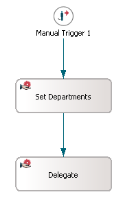
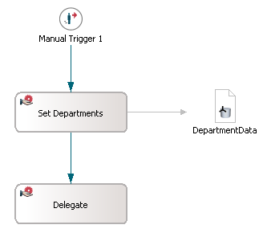
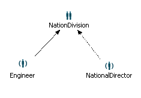
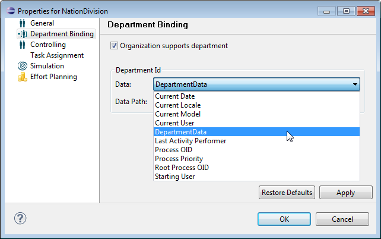
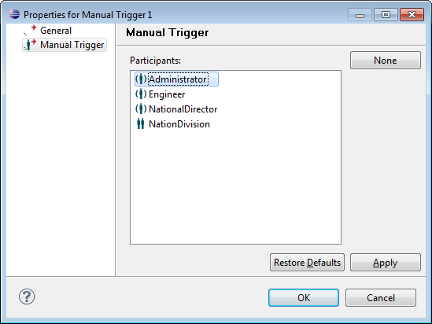
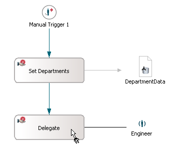
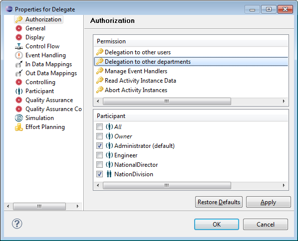

In this chapter we create the example model with its organizational structure and the authorization and department settings we need to demonstrate the delegation of an activity to another department.
The following sections guide you through the process:
Create a new model by choosing File > New > Other > Process Manager Wizards > Process Model in the main menu and name it DemoDelegationModel. A default process definition is created automatically.
Open the diagram of the default process definition. Create a manual trigger by selecting Lifecycle > Manual Trigger in the diagram toolbar palette. Create two subsequent manual activities by selecting Activities > Manual. Name the activities Set Departments and Delegate as demonstrated in the following screenshot:

Figure: Workflow for the Delegation Use Case
Please refer to the chapter Adding Activities to Process Definition of the Support Case Example tutorial for detailed information on how to add and connect activities in a process diagram.
Create a primitive data named DepartmentData, which will be used as data path for the department defined for the organization.
Now assign the data as Out-data mapping to the activity Set Departments. Thus, the department values will be determined via this activity.

Figure: Primitive Data for Department Values
For information on how to create data and set data connections to activities, please refer to the chapter Handling Data in the Process of the Support Case Example tutorial.
Now we create the organizational structure with the participants to perform the workflow.
In the default model diagram, create the following participants:
Via the Connect option in the toolbar palette, connect the role NationalDirector with the organization and choose Manager Of to make it the team leader of the organization. Also connect the role Engineer to the organization, which will be automatically be the Works For connection. Now the organizational structure should look as illustrated in the following screenshot:

Figure: The Organizational Structure
For information on creating and assigning organizations, please refer to the chapter Modeling the Organizational Structure of the Modeling Guide.
To set the department data for the organization NationDivision:

Figure: Department Settings for NationDivision
Now we assign the participants as performers of the activities and the manual trigger. To do so:


Now we give the organization NationDivision the permission to delegate the activity Delegate to other departments. An entitlement Delegation to other departments is provided, that allows the user to delegate work from one department to another. To add this authorization to the activity, perform the following steps:

Figure: Authorization Settings
As authorization settings are inherited to organizations and roles underneath the organizational tree, also the role NationalDirector gets this grant and is authorized to delegate the activity to other departments.
Please refer to chapter Setting Authorization in Model Element Property Pages of the Modeling Guide for detailed information about declarative authorization settings.